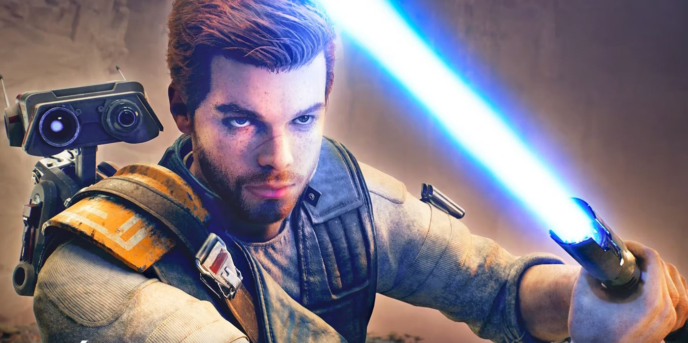
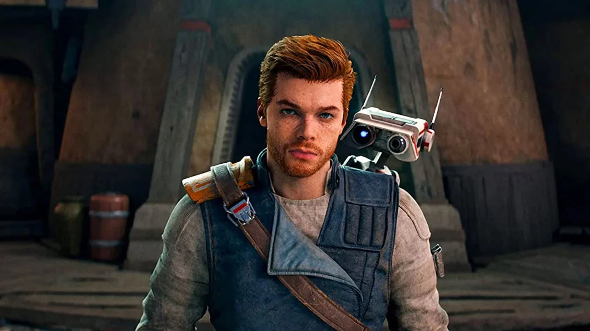

⚔️ La survie d’un Jedi traqué
Jedi Survivor reprend l’histoire de Cal Kestis, l’un des derniers Jedi survivants, alors qu’il lutte contre l’Empire dans une galaxie en pleine tourmente. Ce second opus repousse les limites du premier, avec plus d’exploration, de combats, et de secrets à découvrir. Le combat dans ce jeu est une tuerie!!!!!!C'est incroyable de combattre avec Cal.Il y a tellement de différents mouvement et attaque,énormément de compétences diponibles.il existe 3 posture pour combattre,chacune d'un style particulier.Cal a appris beaucoup de nouveau mouvements inédit.
🚀 Points positifs
- Un monde très vaste et dynamique surtout sur Koboh
- Système de combat enrichi (nouveaux styles de sabre, pouvoirs)
- Un parkour crypté sensationnel
- L'évolution des personnages, en particulier Cal
❌ Points négatifs
- Trop de bugs (Cal transperse le sol,des bugs de cinématique...)
- Mauvaise physique.
- Fin décevante.

🌌 Notre avis
Jedi Survivor est une suite digne de son prédécesseur, offrant une expérience immersive et palpitante. Les fans de Star Wars et les amateurs d’action-aventure trouveront leur bonheur dans ce jeu. Electronic Art a réussi à capturer l’essence de la saga tout en innovant dans le gameplay. Mais nous avons tout de même trouvé que le premier opus était mieux que celui-ci car nous sommes déçus par la fin du jeu alors que dans Jedi Fallen Order la fin était inoubliable ! Mais ce jeu n'a pas une très bonne physique et beaucoup trop de bugs.
✍️ Notre note
🌟🌟🌟🌟☆